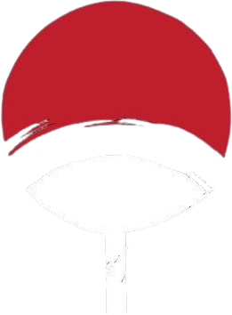

Mukai UCHIHA
La Flamme d’une Rédemption


Qui est Mukai UCHIHA
Mukai Uchiha est né dans l'enceinte du prestigieux domaine Uchiha, au sein de Konohagakure. Enfant insouciant et joyeux, il appréciait particulièrement jouer dans les cours animées de son clan. Il préférait toujours la chaleur familiale à l’agitation du monde extérieur. Mais, derrière cette enfance en apparence paisible, se cachait des tensions latentes, autant dans son entourage que dans l’héritage historique de son clan.
En soif d'apprendre
Curiosité
très, très curieux
Droit/Honnête
N'aime ni les menteurs ni les hypocrites
Sang froid
Depuis la perte de son cousin il ne ressent quasi rien

Routine Parfaite
apprentissage, entraînement
Protecteur
Est toujours là pour sa famille/village
Vers l’âge de sept ans, Mukai et son meilleur ami vivaient une relation fusionnelle qui commençait à se dégrader. Afin de réparer ce lien fragile, le père de Mukai organisa un voyage dans les terres proches du Pays de la Pluie. Ce périple, initialement prévu comme une escapade paisible, se transforma en cauchemar. Alors qu’ils exploraient un hameau reculé, Mukai et son ami furent témoins d’un massacre perpétré par des ninjas inconnus. Ils observèrent avec horreur les villageois se faire attaquer, l’un d’eux tentant courageusement de protéger un enfant avant de tomber sous les coups de ses agresseurs. Mukai, poussé par son instinct protecteur, voulut intervenir, mais fut retenu par son ami. Cette scène tragique le marqua profondément, semant en lui un sentiment d’impuissance qui le hanta longtemps. De retour à Konoha, Mukai et son ami firent de leur mieux pour oublier cet épisode traumatisant, mais l’événement avait laissé une empreinte indélébile. Ce fut un tournant pour Mukai, qui décida de consacrer sa vie à devenir plus fort pour ne plus jamais rester spectateur de l’injustice.
"Je vais soulager mon père et mon clan mais en traçant ma propre voie avec mes propres mains !"
-Mukai UCHIHA

Sous la tutelle de son père, Mukai commença un entraînement intensif au ninjutsu. Il était particulièrement doué pour le Katon « Art du Feu », une affinité naturelle chez les Uchiha. En dépit des échecs initiaux, Mukai et son ami progressèrent ensemble, forgeant une discipline et une volonté à toute épreuve. Deux ans plus tard, à l’âge de dix ans, Mukai passa son examen de ninjas académiques. Bien que nerveux, il puisa dans le soutien de ses amis et la confiance acquise grâce à son entraînement. Ce fut un succès, et il devint genin, marquant le début de sa carrière ninja.
"Ce qu'on risque révèle ce qu'on vaut."
- Mukai Uchiha


En grandissant, Mukai se plongea dans l’histoire de son clan. Il découvrit les récits des actes violents des Uchiha, leurs conflits avec Konoha et les tragédies qui avaient jalonné leur passé. Il apprit également l’existence de reliques anciennes, notamment une épée noire mystérieuse perdue au cours de rixes sanglantes avec d’autres clans.
En grandissant, Mukai se plongea dans l’histoire de son clan. Il découvrit les récits des actes violents des Uchiha, leurs conflits avec Konoha et les tragédies qui avaient jalonné leur passé. Il apprit également l’existence de reliques anciennes, notamment une épée noire mystérieuse perdue au cours de rixes sanglantes avec d’autres clans.
Ces révélations ravivèrent en lui un désir profond : réhabiliter l’honneur des Uchiha tout en évitant les erreurs de leurs ancêtres. Pour cela, Mukai décida de combiner son talent pour le fuinjutsu « techniques de scellement » avec les capacités uniques de son Sharingan. Il se consacra à la création de sceaux protecteurs capables de détecter les intentions hostiles et de protéger les plus faibles.

"La parole entraîne, l'exemple enseigne."
- Mukai Uchiha

Alors que Mukai perfectionnait ses techniques, il devint évident que son chemin ne serait pas sans embûches. Les anciens conflits entre les Uchiha et d’autres clans, comme les Hoshigaki ou les marionnettistes Kugutsu, continuaient de projeter une ombre sur leur réputation. Mukai entreprit de rallier des alliés en nouant des relations avec des clans comme les Nara, connus pour leur sagesse et leur stratégie. En échangeant savoirs et techniques, Mukai cherchait à restaurer la confiance en son clan.
"La parole entraîne, l'exemple enseigne."
- Mukai Uchiha
Pour renforcer ces alliances, Mukai fonda le Dōmei no Michi (« Le Chemin de l’Alliance »), un sanctuaire au cœur de Konoha. Ce lieu servait à la fois de centre de médiation, de formation pour les jeunes ninjas et de refuge pour ceux cherchant un chemin pacifique. Le sanctuaire était protégé par des sceaux activés par le Sharingan, symbolisant la volonté des Uchiha de protéger plutôt que de détruire. Mukai partagea également des fragments de sa mémoire dans ces sceaux, transmettant ses leçons et ses expériences aux générations futures.
"La parole entraîne, l'exemple enseigne."
- Mukai Uchiha
Malgré ses efforts pour restaurer l’honneur de son clan, Mukai savait que la route vers la rédemption était longue. Il décida de partir en quête de l’épée noire perdue, espérant que cette relique pourrait être un symbole de renouveau pour les Uchiha. Ce voyage l’entraîna dans des contrées lointaines et dangereuses, le mettant face à des adversaires redoutables tout en approfondissant sa compréhension du monde.
"La parole entraîne, l'exemple enseigne."
- Mukai Uchiha
"La Famille Uchiha"
Le clan Uchiha est l'un des deux clan majeurs de la fondation du village de Konohagakure. Ce clan occupe une place importante au sein de village bien que le domaine du clan est le plus excentré du palais du Maître Hokage. Le clan Uchiha est un clan extrêmement redoutable connu pour leurs capacités au combat et leurs fameuses pupilles écarlates nommé "Sharingan 写輪眼", développant leurs capacités d'analyser et combatives, cependant ses pupilles engendrent souvent des événements tragiques. Au yeux du monde Shinobi, le clan Uchiha instaure de l'admiration ou encore encore de la terreur pour certains. Malgré cela, le clan est défini par la puissance de leurs émotions qui, lorsqu'un Uchiha subit un choc psychologique, peut amener à l'apparition du Sharingan.
"Mes yeux sont une malédiction, ceux qui croiseront mon regard seront maudits"
-Mukai Uchiha

Objectifs (Court terme) :
Mukai veut prouver la valeur des Uchiha et améliorer leur image à Konoha. Il cherche à renforcer la position de son clan en devenant un modèle pour la nouvelle génération de ninjas. Mukai prévoit d'intégrer l'académie des ninjas pour enseigner et partager ses connaissances, afin de montrer que les Uchiha sont des alliés précieux. En même temps, il s'engage à défendre le village en renforçant sa sécurité et en intervenant lors des incidents pour veiller à la prospérité de Konoha. Il souhaite aussi créer des liens solides avec tous les villageois, et se faire de nouveaux amis.

Objectifs (Moyen terme) :
Mukai veut approfondir l’étude du genjutsu une spécialité importante de son clan. Il souhaite lier cette expertise au fuinjutsu dans lequel il veut devenir un expert. Son objectif est de créer des sceaux de protection puissants qui serviront de barrières mentales pour protéger ses alliés des illusions ennemies. Il prévoit aussi des techniques combinant le genjutsu et le fuinjutsu pour immobiliser un adversaire ou créer des zones défensives imprégnées d’illusions bienveillantes. Ces innovations auront pour but de protéger et pacifier plutôt que de dominer. Mukai veut également voyager à travers le monde pour retrouver des artefacts anciens et restaurer des traditions et rituels oubliés du clan Uchiha.

Objectif (long terme Clan) :
Sur le long terme, Mukai rêve de faire renaître les Uchiha en leur redonnant un rôle central dans Konoha. Il veut effacer les stigmates de leur passé tragique et construire un avenir où les Uchiha seront reconnus pour leur sagesse, leur puissance et leur capacité à unir les shinobi. Mukai veut réformer les dynamiques internes du clan en créant un conseil familial qui permettrait aux générations plus jeunes d’apporter des idées neuves, tout en respectant les traditions des aînés. Ce conseil représenterait l’équilibre entre le passé, le présent et l’avenir du clan. Sur le plan des relations extérieures, il cherche à renforcer les alliances avec des clans comme les Nara, connus pour leur intelligence et leur sagesse, et à apaiser les tensions historiques avec les Hoshigaki et les Kugutsu par des collaborations sur le terrain ou des échanges culturels. Enfin, Mukai ambitionne de fonder une académie ou un sanctuaire dédié aux arts du genjutsu et du fuinjutsu, ouvert à tous les shinobi désireux d’apprendre ces disciplines. Ce lieu serait un symbole de l’évolution des Uchiha, et un centre où les valeurs de coopération et de protection seraient au cœur de la formation. Grâce à ces efforts, Mukai espère transformer son clan en un exemple de rédemption, prouvant que les Uchiha peuvent incarner à la fois puissance et bienveillance, tout en jouant un rôle clé dans l’avenir de Konoha.


» KATON «
» HYÔTON «

» DÔJUTSU «
Le Katon 火遁 est une nature de chakra innée dans le clan Uchiha. Mukai ne déroge pas à la règle et possède cette nature de chakra et la maitrise comme la plupart des membres de son clan. Celui-ci sera capable de créer des murs de feu dès son plus jeune âge.
Le Hyôton est un Kekkei Genkai ce qui est la fusion du Suiton 水遁 et Futon 風遁, le Hyôton permet de manipuler la glace. Mukai maitrise ce Kekkei Genkai et l'utilise afin de déstabiliser ses adversaires
Les membres du clan Uchiha sont décrit par une seule et même caractéristique : L'un des dôjutsu des plus redoutables le Sharigan. Mukai n'échappe pas à cette règle et ce pouvoir si mystérieux coule dans ses veines et est convoité par beaucoup.

» Taille:
Mukai fait 1m54
» Poids:
Mukai fait 50kg
» Corpulence:
Mukai possède une musculature standard
» Cheveux:
La couleur de cheveux de Mukai est noir
» Caractères:
Mukai est une personne appréciant la vie globalement. Son but est de partager sa joie de vivre bien qu'il soit très méfiant des autres personnes. Mukai n'a de confiance personne même ses proches.
Qualités Mukai
- Joyeux
- Prêt à partager
- Tolérant
- Intelligent
- Fidèle/Honnête
- Patient
- Créatif
- Déterminé
- Généreux
défauts Mukai
- Condescendant
- Méfiant
- Anxieux
- Procrastinateur
- Narcoleptique
- Têtu